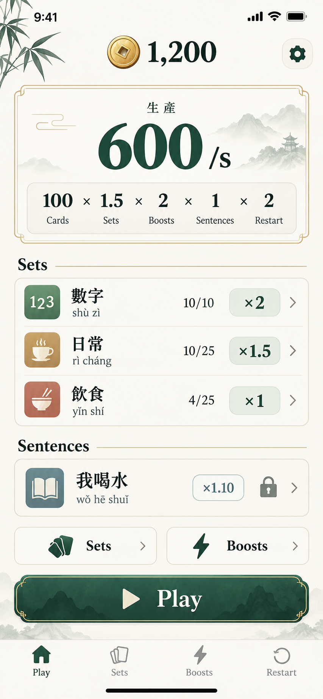
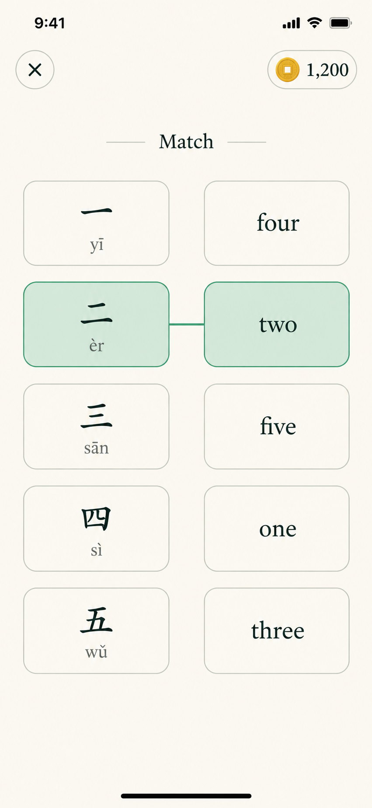
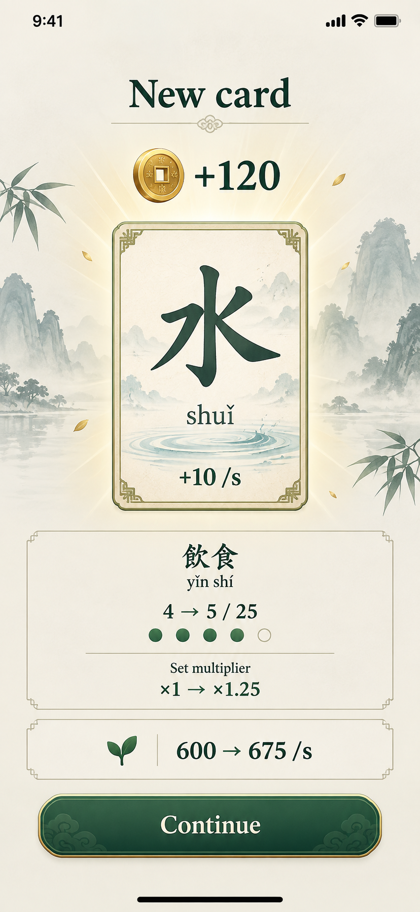
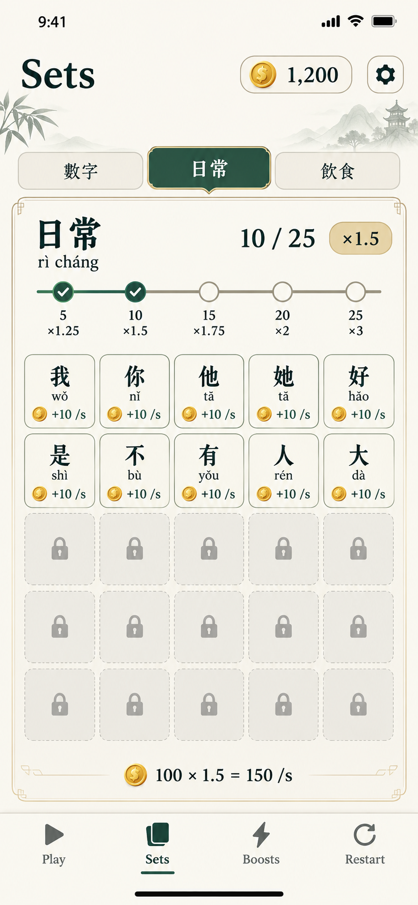
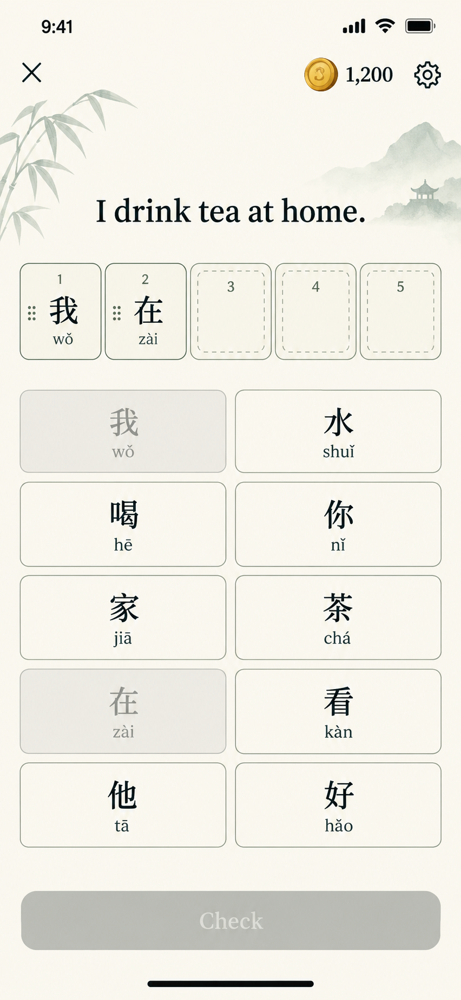
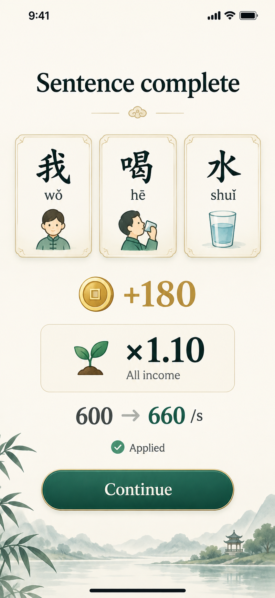
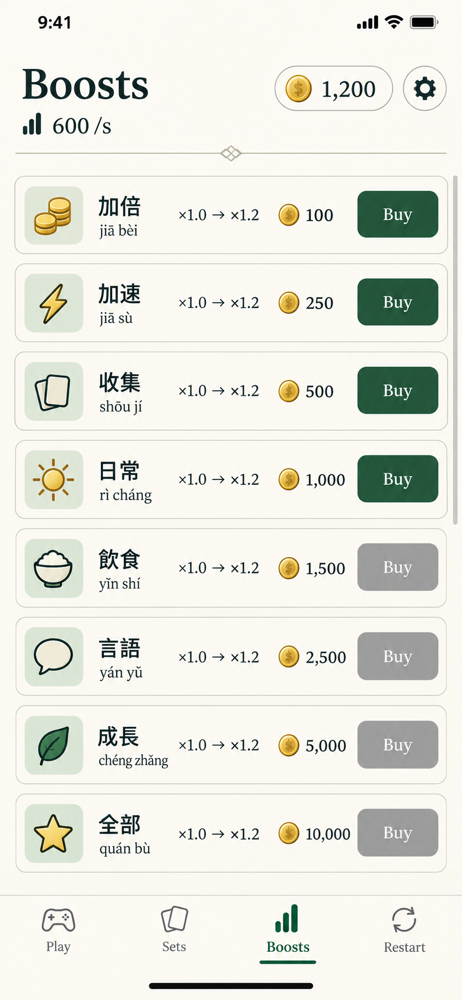
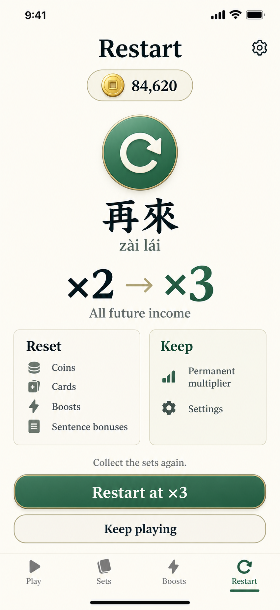
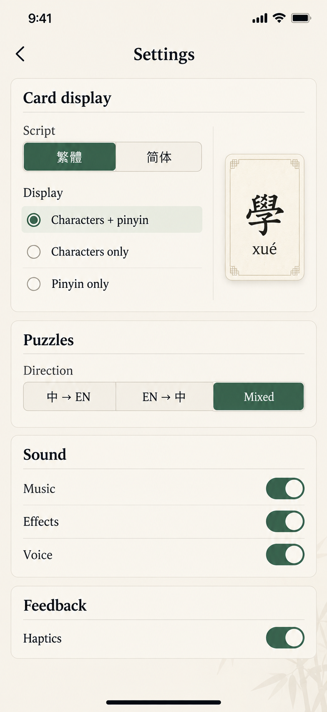

What changed
One coin balance. No combo, next-drop meter, gems or visible round number. Difficulty progresses in the background. Sentence bonuses apply automatically, replacing chains and equipment. Card-order puzzles support eight to ten choices and two to five answer words.
The production rule
Sum of (each set’s card income × its completion bonus × its specific boosts) × global boosts × sentence bonuses × permanent restart multiplier.
The home screen may show a weighted effective set multiplier to summarize multiple sets. It is a summary, not another purchase or currency.

One score, several ways to grow it
Coins are the only spendable resource. The large rate shows how fast they arrive. The compact factors explain the total without adding extra currencies. Play immediately starts a puzzle; no round number or difficulty label is shown.

Match and move on
Connect the Chinese cards to the English answers. Complete the board to receive a separate reward screen. There is no combo, countdown to a drop, streak or visible round progress.

A new card improves its whole set
The reveal shows the coin payout, the new card, and any set milestone reached. Every card contributes passive income; collecting more unique cards raises the multiplier for that set. Duplicate cards improve their existing card instead of increasing unique completion.

Finish sets for larger rewards
Each collection has 25 slots, apart from smaller starter sets such as numbers. The milestone strip is the main reason to fill missing slots. Owned cards show Chinese, pinyin and production, without English definitions.

Ten choices, two to five answer slots
Tap a choice to place it into the next empty answer slot. Tap a placed card to return it; drag within the answer row to change order. Used choices stay dimmed so the grid does not jump. Check enables when the target is full. The number of answer slots adapts to the phrase, while the choice bank supports eight to ten cards.
Different answer lengths
| Clue | Answer cards, in order |
|---|---|
| Hello | 你 / 好 |
| I drink water. | 我 / 喝 / 水 |
| I also drink water. | 我 / 也 / 喝 / 水 |
| I drink tea at home. | 我 / 在 / 家 / 喝 / 茶 |
These are card-token counts. Some Chinese words contain multiple characters; a later card could hold a complete word such as 喜歡. Puzzles must provide enough copies when an answer repeats a word.

A sentence is an automatic income upgrade
This replaces the confusing chain reward. Solving a new sentence for the first time in the current run automatically applies its income multiplier. No equipping, linking, loadout or extra resource. The screen shows the sentence, coins earned, and the change to income.

Buy what you can afford
Eight compact rows fit on one screen. Chinese and pinyin identify the upgrade; icons show what it affects. The multiplier, price and enabled button communicate the rest. Purchases use the same coin balance as everything else.

Prestige changes a multiplier, not a currency
Restart resets coins, collected cards, purchased boosts and sentence bonuses. It increases a permanent multiplier directly. The player rebuilds sets and solves sentences again, earning faster. Preferences stay saved. No gems or insight are awarded.

Display choices stay here
Traditional or simplified script, characters with or without pinyin, pinyin-only display, puzzle direction, audio and haptics live on this separate page. Gameplay shows only the chosen presentation.